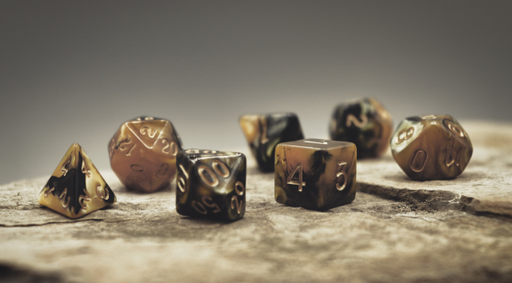
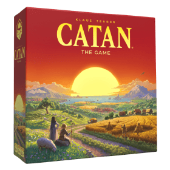
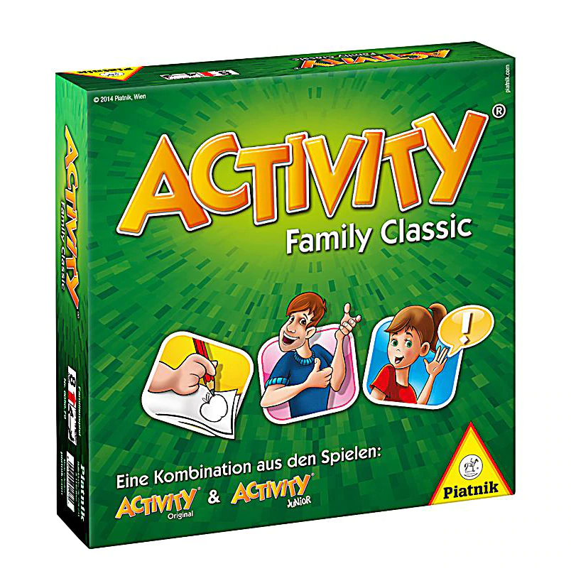
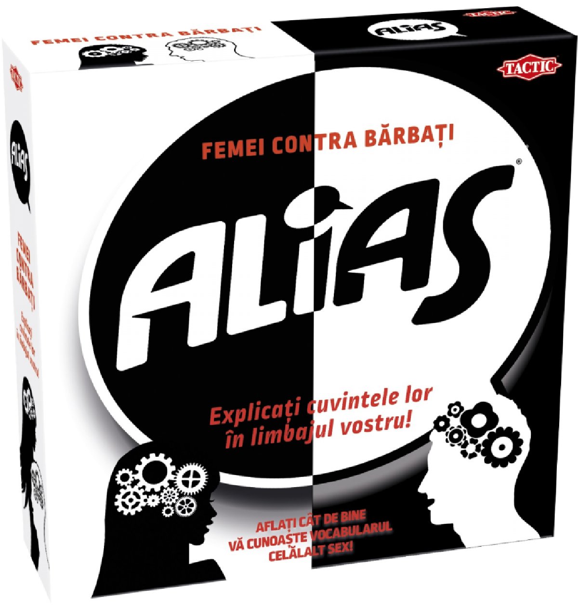
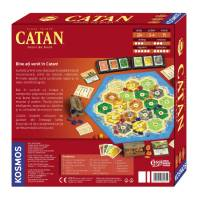
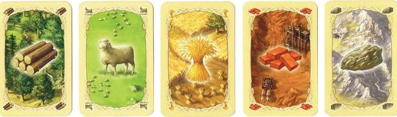

Bine ati venit la GameCorner!
Descoperiți cele mai noi lansări de boardgames România.

Despre noi
GameCorner este site-ul ideal pentru orice pasionat de jocuri de societate. Suntem un magazin online jocuri care își propune să aducă cele mai bune boardgames direct la tine acasă. Fie că preferi jocuri de masă clasice sau cauți cele mai noi jocuri, aici vei găsi mereu ceva pe gustul tău.
În catalogul nostru de jocuri de societate, punem accent pe diversitate. Oferim de la pachete variate de carti de joc , până la jocuri dinamice precum UNO, iubite de toate vârstele.
Dacă ești un fan al provocărilor logice, secțiunea noastră de jocuri de strategie te va impresiona. Avem titluri legendare precum Catan, unde negocierea este cheia succesului, dar și jocuri pline de umor și interacțiune cum este Alias.
Indiferent dacă ești în căutarea unor jocuri singleplayer pentru momente de relaxare individuală sau plănuiești o seară cu prietenii plină de jocuri multiplayer, GameCorner este partenerul tău de încredere. Explorează acum oferta noastră de boardgames România și alege cele mai bune jocuri de masă și jocuri de strategie pentru colecția ta!
Noutăți și Lansări
Cele mai noi jocuri de societate tocmai au ajuns în stocul nostru, precum:
- Catan – celebrul joc de strategie și negociere.
- Alias Party – joc de cuvinte, perfect pentru sesiunile de jocuri cu prietenii sau familia.
- Activity – un joc clasic al interacțiunii și creativității, ideal pentru seri memorabile cu prietenii.
Pentru a fi la curent cu topurile mondiale de boardgames, vizitați comunitatea BoardGameGeek, cea mai mare comunitate dedicată jocurilor de societate.
Secretul numerelor 6 și 8 în Catan
Te-ai întrebat de ce pe tabla de joc jetoanele cu 6 și 8 sunt singurele scrise cu roșu? Nu e doar design! Acestea sunt cele mai norocoase numere după cifra 7.
Matematic, șansa de a nimeri o anumită sumă (s) când dai cu două zaruri se calculează astfel:
Mai simplu spus: pentru a obține un 2 sau un 12, ai o singură combinație posibilă. Pentru 6 sau 8, ai câte 5 combinații diferite! De aceea, cine își pune satele pe aceste numere are cele mai mari șanse să câștige.
Promoții și Oferte Speciale
Cele mai bune prețuri pentru pasionații de boardgames România
Profită de reducerile noastre la diverse jocuri de masă.
Nu rata ocazia de a adăuga în colecția ta Catan, Alias sau seturi de carti de joc la cele mai mici prețuri!
Atenție! Oferta expiră la data de 8 aprilie 2026! Nu rata ocazia de a cumpăra jocuri cu mecanici de worker placement sau area control la prețuri reduse.
Este esențial să verifici stocul înainte de a plasa comanda, deoarece produsele din categoria jocuri de societate se epuizează rapid.
Cum calculăm reducerea ta?
Unde reducerea reprezintă procentul aplicat în perioada promoțională curentă.
Evenimente în Comunitate
Alătură-te comunității noastre de pasionați de boardgames România la următoarele întâlniri:
-
,
Campionat de Catan - Vino să îți demonstrezi abilitățile de negociator și poți câștiga vouchere de discount
pe care le poți folosi la urătoarea comandă plasată pe GameCorner.
Grad de ocupare locuri:
8 din 30 (Valoare mică: 8 înscriși din 30) -
,
Workshop: Noutăți de strategie - Prezentăm și testăm cele mai noi jocuri de strategie sosite în stoc.
Intrarea este liberă pentru toți membrii.
Grad de ocupare locuri:
45 din 50 (Valoare mare: 45 înscriși din 50) -
,
Seară de Alias și Uno - O seară relaxată dedicată jocurilor de tip jocuri multiplayer, ideală
pentru a cunoaște alți jucători din București.
Grad de ocupare locuri:
50 din 60 (Valoare optimă: 50 înscriși din 60)
Nu știi ce să asculți când te joci?
Încearcă acest playlist realizat special pentru tine:
Catalog de produse
Explorează selecția noastră de boardgames, împărțită pe categorii pentru a găsi jocul perfect!
Jocuri de strategie

Jocuri de familie


Detalii produse
Detalii Produs: Catan
Preț vechi: 220 RON. Preț nou: 180 RON.
Catan este un joc de strategie esențial pentru orice colecție de boardgames.
Specificații
- Număr de jucători
- 3 - 4 persoane
- Durată medie
- 60 - 90 minute
- Vârstă recomandată
- 10 ani +
- Complexitate
- Medie
Apasă pe imaginea de mai jos pentru a vedea detaliile jocului Catan:

Regulamentul Jocului Catan
Consultă regulamentul oficial pentru Catan direct în browserul tău pentru a învăța regulile acestuia:
Resursele din Catan
Apasă pe fiecare resursă pentru a afla la ce se folosește în joc:

Lemn
Lemnul este folosit pentru construirea drumurilor și a satelor.
Oaie
Oaia este necesară pentru dezvoltări și pentru construcția orașelor.
Fân
Fânul (grâul) este folosit pentru a construi orașe și pentru cărți de dezvoltare.
Cărămidă
Cărămida este folosită împreună cu lemnul pentru construirea drumurilor și a satelor.
Piatră (Minereu)
Piatra este o resursă importantă folosită pentru construirea orașelor și pentru cărțile de dezvoltare.
Ce spun jucătorii
„Catan e un joc super tare cu 3 sau 4 jucători.”
Pentru mai multe informații despre jocul Catan consultați:
https://boardgamegeek.com/
Detalii Produs: Activity Family Classic
Preț vechi: 160 RON. Preț nou: 135 RON.
Activity este un joc clasic de interacțiune, ideal pentru orice petrecere sau seară în familie.
Specificații
- Număr de jucători
- 3 - 16 persoane (pe echipe)
- Durată medie
- 45 - 60 minute
- Vârstă recomandată
- 8 ani +
- Complexitate
- Scăzută
Detalii Produs: Alias Party
Preț vechi: 150 RON. Preț nou: 120 RON.
Alias Party este o variantă dinamică a popularului joc de cuvinte, adăugând provocări amuzante modului clasic de joc.
Specificații
- Număr de jucători
- 4+ persoane (minim 2 echipe)
- Durată medie
- 45 - 60 minute
- Vârstă recomandată
- 11 ani +
- Complexitate
- Scăzută
Contul meu
Administrează-ți datele personale și vizualizează lista de favorite.
Istoric Comenzi
Aici poți vedea toate achizițiile tale de jocuri de masă.
Contact și alte informații
Întrebări frecvente
Tot ce trebuie să știi despre livrarea de boardgames România.
Dicționarul Jucătorului
Un termen des întâlnit în rândul iubitorilor de Boardgames este Meeple, care reprezintă figurina din lemn sau plastic utilizată pentru a marca poziția unui jucător pe tabla de joc.
Așa cum spunea George Bernard Shaw: Nu ne oprim din joacă pentru că îmbătrânim, îmbătrânim pentru că ne oprim din joacă.
Localizare Sediu Central
Te așteptăm în inima Bucureștiului pentru a testa cele mai noi boardgames România:
Cele mai populare jocuri în 2026
| Poziție | Nume Joc | Categorie | Preț (RON) | Disponibilitate |
|---|---|---|---|---|
| 1 | Catan | Jocuri de strategie | 180 | În stoc |
| 2 | Nume de cod | 95 | Stoc limitat | |
| 3 | Alias | Jocuri de petrecere | 120 | În stoc |
| 4 | Ticket to Ride | Jocuri de familie | 210 | În stoc |
| 5 | Uno | Cărți de joc | 35 | În stoc |
| Total titluri în topul lunii: | 5 | |||
Tutoriale
Dacă nu aveți răbdare să citiți regulamentul, vă recomandăm următoarele ghiduri video.
Sperăm să le urmăriți, să vedeți cât e de greu simplu să învățați mecanicile,
și să veniți să achiziționați jocul de la noi 😀. Mulțumim! 😁
Resurse pentru Descărcare
Descarcă logoul oficial GameCorner:
Click aici pentru a descărca logoulInformații Utile Jucători
Întrebări Frecvente
Cum aleg primul meu joc de strategie?
Dacă ești începător, îți recomandăm titluri precum Catan sau Ticket to Ride. Acestea au reguli simple, dar oferă o profunzime tactică excelentă pentru boardgames România.
Aveți jocuri potrivite pentru copii sub 6 ani?
Desigur! Avem o categorie specială de jocuri de masă Junior, concepute pentru a dezvolta memoria și coordonarea celor mici prin joacă.
Se pot testa jocurile înainte de cumpărare?
Da, te așteptăm la serile noastre de evenimente unde poți încerca majoritatea jocurilor din catalogul nostru de magazin online jocuri.
Beneficii Club GameCorner
Reducere de fidelitate %
Membrii clubului primesc o reducere automată de 10% la orice comandă care depășește pragul de 300 RON.
Acces Early-Bird la lansări
Primești notificări cu 24 de ore înainte de lansarea oficială a noilor titluri de jocuri de strategie pentru a-ți rezerva exemplarul.